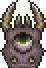
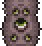
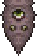
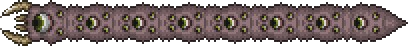

Stats:

Stats:

Stats:

The Eye of Cthulhu can be summoned within the Corruption Biome if 3 Shadow Orbs are destroyed.
When the first shadow orb is destroyed, a warning is sent to the player: "A horrible chill goes down your spine..."
When the second orb is destroyed, the second message is sent to the player: "Screams echo around you..."
When the last and final 3rd orb is destroyed, the player is greeted with the arrival of the boss Eater of Worlds and the message: "Eater of Worlds has awoken!"
The Eater of Worlds can be manually summoned using the Worm Food at anytime in the Corruption biome.
Worm Food can be crafted using the following items on a Demon/Crimson Altar:
The Eater of Worlds is a worm like creature made up of multiple heads that each have their own health points.
When one of the body heads is killed, the Eater of Worlds splits apart into 2 Eater of Worlds.
This repeats everytime a body head is killed until every head is dead.
The Eater of Worlds is a Corruption-Exclusive boss, only found in Corruption generated worlds. Its counter-part, the Crimson world, is the boss Brain of Cthulhu.
